배우기 전에 먼저 해 보세요. 틀려도 괜찮아요.
Gehen Sie über die Brücke.는 무슨 뜻일까요?
über는 '~을 건너'라는 뜻이에요.
ab Montag은 무슨 뜻일까요?
ab는 '~부터'예요.
A2.2 Mittendrin · Lektion 1
교통과 여행
음성은 준비 중이에요. 듣기 단추와 받아쓰기는 음성이 올라오면 쓸 수 있어요. 그동안은 글을 읽으면서 공부해요.
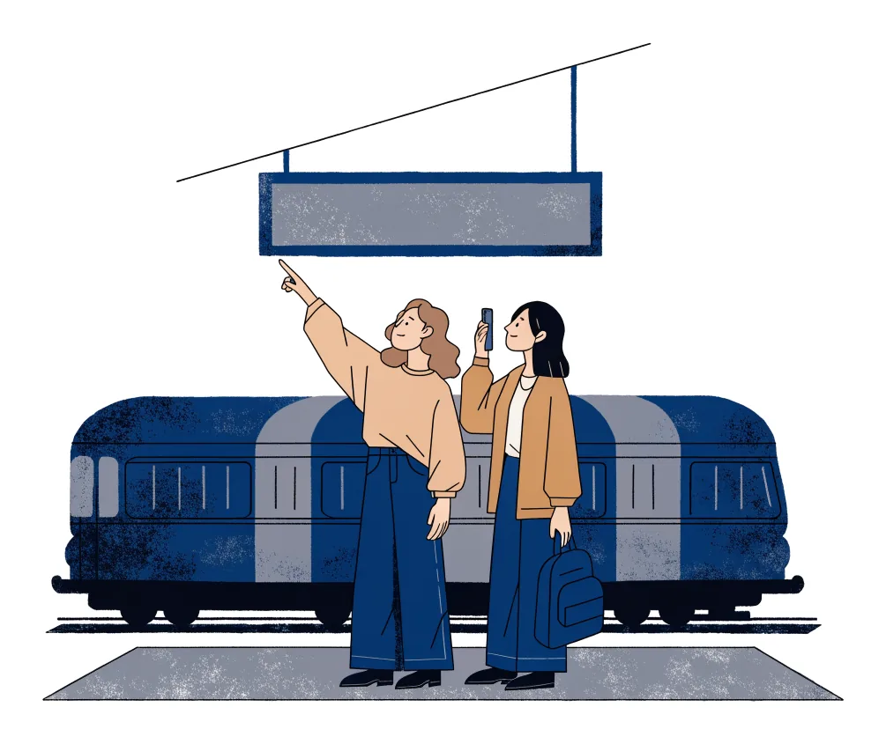
주말여행을 가든 출장을 가든, 독일에서는 기차를 탈 일이 많아요. 표를 사고, 선로를 찾고, 열차가 늦거나 취소되면 다른 길을 찾아야 해요. 이 과에서는 길과 교통편을 자세히 설명하는 말을 배우고, der, das, die 뒤에 오는 형용사의 끝을 익혀요.
문법 aus, von, zu, nach, durch, über, an … vorbei, gegenüber, seit, vor, ab, bis, Adjektive nach der, das, die
과제대학학기 승차권(Semesterticket)으로 주말 여행 계획하기
과제직장출장 기차표를 예매하고 늦는다고 알리기
이 과를 마치면 길과 교통편을 자세히 설명하고, 표를 예매하고, 늦는다고 알리고, 여행 계획을 말할 수 있어요.
이 과에서 쓸 말이에요.
배우기 전에 먼저 해 보세요. 틀려도 괜찮아요.
Gehen Sie über die Brücke.는 무슨 뜻일까요?
über는 '~을 건너'라는 뜻이에요.
ab Montag은 무슨 뜻일까요?
ab는 '~부터'예요.
1월의 금요일 저녁, WG 부엌이에요. Lena가 Jiu에게 주말에 같이 가자고 해요.
들으면서 찾아보세요. 두 사람은 몇 시에 어디에서 만나나요?
수요일 오후, 프랑크푸르트 중앙역의 표 파는 곳이에요. Dohyun은 내일 함부르크의 고객에게 가야 해요.
들으면서 찾아보세요. Dohyun은 어느 열차를 타기로 하나요?
토요일 오전, 시내 거리예요. Sora가 딸 Hana와 시립 박물관을 찾고 있어요. 지나가는 사람에게 길을 물어요.
들으면서 찾아보세요. 박물관은 어디에 있나요?
세 대화를 듣고 답하세요.
마르부르크까지 지역 열차로 얼마나 걸리나요?
Lena muss für die Fahrt ein Ticket kaufen.
학기 승차권이 있어서 지역 열차는 무료예요.
역에서 성까지 어떻게 가나요?
Dohyun은 함부르크에서 몇 시에 약속이 있나요?
Der ICE um sieben Uhr fährt morgen.
내일은 운행하지 않아요.
Dohyun은 어느 열차를 타기로 하나요?
시립 박물관은 어디에 있나요?
Das Museum ist am Montag geöffnet.
월요일에는 닫아요.
낱말 48개예요. 명사는 der, die, das를 색으로 구분했어요.
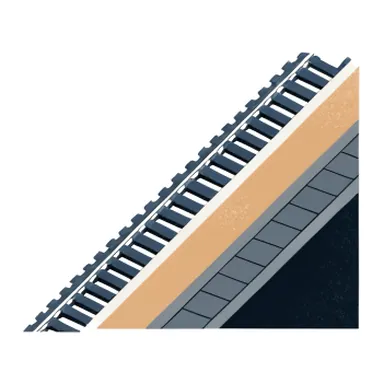
das Gleis, die Gleise 선로, 타는 곳
Der Zug fährt von Gleis neun ab.열차는 9번 선로에서 출발해요.
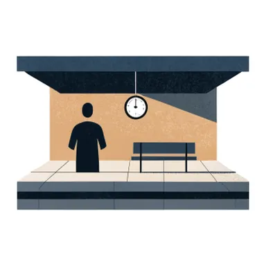
der Bahnsteig, die Bahnsteige 승강장
Wir warten am Bahnsteig.우리는 승강장에서 기다려요.
die Abfahrt 출발
Die Abfahrt ist um sieben Uhr.출발은 7시예요.
die Ankunft 도착
Die Ankunft in Hamburg ist um elf Uhr.함부르크 도착은 11시예요.
die Verbindung, die Verbindungen (교통) 연결편
Gibt es eine direkte Verbindung?직행편이 있어요?
der Anschluss, die Anschlüsse 갈아탈 열차
Ich habe meinen Anschluss verpasst.갈아탈 열차를 놓쳤어요.
die Durchsage, die Durchsagen 안내 방송
Hast du die Durchsage verstanden?안내 방송 알아들었어요?
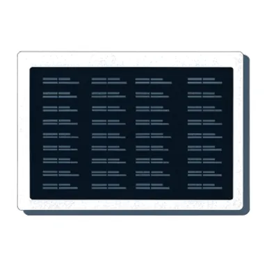
der Fahrplan, die Fahrpläne 운행 시간표
Der Fahrplan hängt am Bahnsteig.시간표는 승강장에 붙어 있어요.
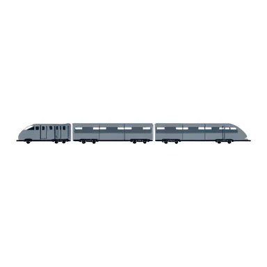
der Regionalzug, die Regionalzüge 지역 열차
Der Regionalzug hält in Marburg.지역 열차는 마르부르크에 서요.
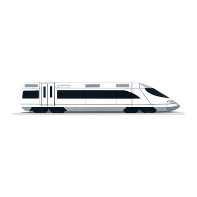
der ICE, die ICEs 고속 열차
Der ICE ist schneller als der Regionalzug.ICE는 지역 열차보다 빨라요.
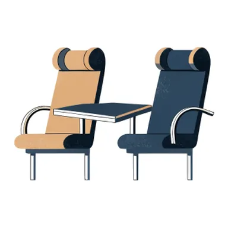
der Sitzplatz, die Sitzplätze 좌석
Ich möchte einen Sitzplatz reservieren.좌석을 예약하고 싶어요.
das Ticket, die Tickets 표
Ich kaufe das Ticket in der App.표는 앱으로 사요.
das Semesterticket 학기 승차권
Mit dem Semesterticket fahre ich kostenlos.학기 승차권이 있으면 무료로 타요.
die Rückfahrt, die Rückfahrten 돌아오는 길
Die Rückfahrt ist am Sonntag.돌아오는 건 일요일이에요.
ausfallen (fällt aus, ist ausgefallen) (열차나 수업이) 취소되다
Der Zug fällt heute aus.그 열차는 오늘 운행하지 않아요.
kostenlos 무료의
Der Eintritt ist kostenlos.입장은 무료예요.
direkt 곧바로, 직행의
Der Zug fährt direkt nach Hamburg.그 열차는 함부르크까지 바로 가요.
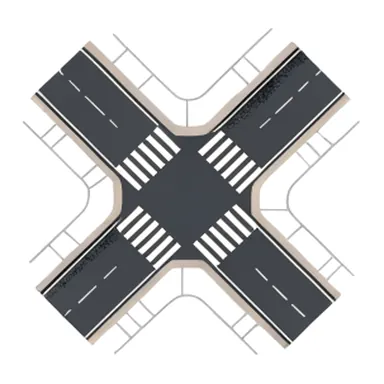
die Kreuzung, die Kreuzungen 교차로
An der Kreuzung gehen Sie rechts.교차로에서 오른쪽으로 가세요.
die Richtung, die Richtungen 방향
Fahren Sie in Richtung Zentrum.시내 방향으로 가세요.
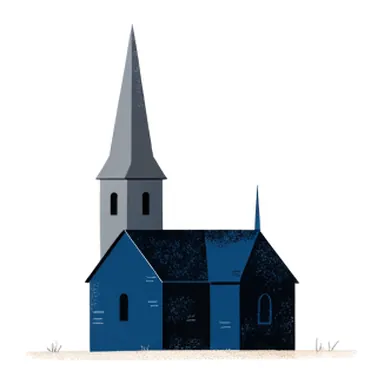
die Kirche, die Kirchen 교회, 성당
Gehen Sie an der Kirche vorbei.교회를 지나가세요.
die Fußgängerzone, die Fußgängerzonen 차가 다니지 않는 거리
In der Fußgängerzone gibt es viele Geschäfte.그 거리에는 가게가 많아요.
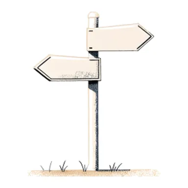
das Schild, die Schilder 표지판
Das Schild zeigt den Weg zum Schloss.표지판이 성으로 가는 길을 알려 줘요.
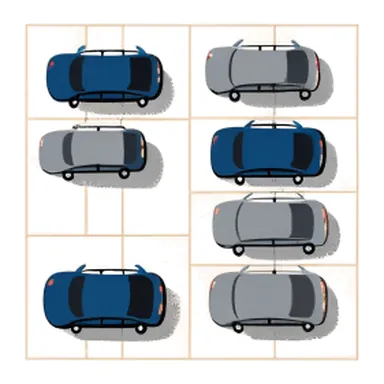
der Parkplatz, die Parkplätze 주차장
Der Parkplatz ist hinter dem Bahnhof.주차장은 역 뒤에 있어요.
die Autobahn, die Autobahnen 고속도로
Auf der Autobahn ist Stau.고속도로가 막혀요.
abbiegen (ist abgebogen) (길을) 꺾다
Biegen Sie an der Ampel links ab.신호등에서 왼쪽으로 꺾으세요.
überqueren (hat überquert) 건너다
Wir überqueren die Straße.우리는 길을 건너요.
an … vorbei ~ 옆을 지나서
Wir gehen am Rathaus vorbei.우리는 시청을 지나가요.
gegenüber 맞은편에
Das Café ist gegenüber vom Bahnhof.카페는 역 맞은편에 있어요.
über ~을 건너, ~ 위로
Gehen Sie über die Brücke.다리를 건너가세요.
entlang ~을 따라
Gehen Sie die Straße entlang.이 길을 따라가세요.
hinauf 위로
Wir gehen zum Schloss hinauf.우리는 성으로 올라가요.
der Stadtteil, die Stadtteile (도시 안의) 동네, 구역
Bockenheim ist ein Stadtteil von Frankfurt.보켄하임은 프랑크푸르트의 한 동네예요.
die Unterkunft, die Unterkünfte 숙소
Wir suchen eine günstige Unterkunft.우리는 싼 숙소를 찾아요.
die Jugendherberge, die Jugendherbergen 유스호스텔
Die Jugendherberge ist billig.유스호스텔은 싸요.
das Gepäck 짐
Ich habe nicht viel Gepäck.저는 짐이 많지 않아요.
die Sehenswürdigkeit, die Sehenswürdigkeiten 볼거리, 명소
Das Schloss ist eine Sehenswürdigkeit.그 성은 명소예요.
das Ziel, die Ziele 목적지, 목표
Unser Ziel ist Marburg.우리 목적지는 마르부르크예요.
die Landschaft, die Landschaften 풍경
Die Landschaft ist sehr schön.풍경이 아주 아름다워요.
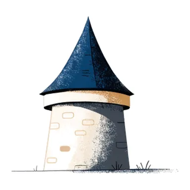
der Turm, die Türme 탑
Vom Turm sieht man die ganze Stadt.탑에서는 도시가 한눈에 보여요.
der Tourist, die Touristen 관광객
Im Sommer kommen viele Touristen.여름에는 관광객이 많이 와요.
berühmt 유명한
Die Stadt ist berühmt für ihr Schloss.그 도시는 성으로 유명해요.
beliebt 인기 있는
Marburg ist bei Studenten beliebt.마르부르크는 대학생에게 인기가 있어요.
gemütlich 아늑한, 편안한
Das Café ist klein und gemütlich.그 카페는 작고 아늑해요.
historisch 역사가 오래된
Die historische Altstadt ist schön.오래된 구시가지가 아름다워요.
geöffnet 문을 연
Das Museum ist bis achtzehn Uhr geöffnet.박물관은 18시까지 열어요.
geschlossen 문을 닫은
Am Montag ist das Museum geschlossen.월요일에는 박물관이 닫아요.
ab ~부터
Ab Montag fahre ich mit dem Zug.월요일부터 저는 기차를 타요.
planen (hat geplant) 계획하다
Wir planen einen Ausflug.우리는 나들이를 계획해요.
이 과의 낱말로 여덟 문제를 풀어요.
왼쪽은 떠나온 곳, 오른쪽은 가는 곳이에요.
규칙
어디에서 왔는지는 aus와 von으로, 어디로 가는지는 zu와 nach로 말해요. aus는 나라와 도시, 그리고 안에서 밖으로 나올 때 써요. von은 떠나온 곳이나 사람에 써요. nach는 도시와 나라에, zu는 사람과 장소에 써요. 네 가지 모두 뒤에 Dativ가 와요.
| 말 | 쓰임 | 예 |
|---|---|---|
| aus | 나라, 도시, 안에서 밖으로 | aus Korea, aus dem Haus |
| von | 떠나온 곳, 사람 | vom Bahnhof, von Lena |
| zu | 가는 곳, 사람 | zum Arzt, zur Arbeit |
| nach | 도시, 나라, 집 | nach Berlin, nach Hause |
주의 집은 따로 익혀요. 집에 있을 때는 zu Hause, 집으로 갈 때는 nach Hause예요. 관사가 붙는 나라에 갈 때는 in을 써요. Ich fahre in die Schweiz.
규칙을 보고 바로 확인해 보세요.
Um sechs gehe ich … Hause. 빈칸에 알맞은 말은 무엇인가요?
규칙
durch는 안을 지나갈 때, über는 위로 건너갈 때 써요. 둘 다 뒤에 Akkusativ가 와요. an … vorbei는 옆을 지나칠 때 쓰고 가운데에 Dativ가 와요. gegenüber는 맞은편이라는 뜻이고 Dativ와 써요.
| 말 | 뜻 | 예 |
|---|---|---|
| durch | ~을 지나서 | durch den Park |
| über | ~을 건너 | über die Brücke |
| an … vorbei | ~ 옆을 지나 | am Rathaus vorbei |
| gegenüber | ~ 맞은편에 | gegenüber vom Park |
| entlang | ~을 따라 | die Straße entlang |
주의 entlang은 명사 뒤에 와요. Gehen Sie die Straße entlang. gegenüber는 gegenüber vom Bahnhof라고도 하고 dem Bahnhof gegenüber라고도 해요. 말할 때는 vom을 넣는 쪽을 많이 써요.
규칙을 보고 바로 확인해 보세요.
Wir gehen am Rathaus … 빈칸에 알맞은 말은 무엇인가요?
규칙
seit는 지난 때부터 지금까지, vor는 '~ 전에', ab는 '~부터', bis는 '~까지'예요. seit, vor, ab 뒤에는 Dativ가 와요.
| 말 | 뜻 | 예 |
|---|---|---|
| seit | ~부터 지금까지 | seit einem Jahr |
| vor | ~ 전에 | vor zehn Minuten |
| ab | ~부터 | ab Montag, ab acht Uhr |
| bis | ~까지 | bis Sonntag, bis zum Abend |
주의 seit는 벌써 시작된 일에, ab는 이제부터 시작하는 일에 써요. Ich arbeite seit Mai hier.는 5월부터 지금까지 일하고 있다는 뜻이에요. Ich arbeite ab Mai hier.는 5월부터 일할 거라는 뜻이에요. 날짜 앞에서는 bis zum을 써요. bis zum dritten Mai.
규칙을 보고 바로 확인해 보세요.
Ich wohne … einem Jahr hier. 빈칸에 알맞은 말은 무엇인가요?
규칙
der, das, die 뒤에서는 형용사 끝이 -e 아니면 -en이에요. Nominativ에서는 셋 다 -e예요. Akkusativ에서는 der 명사만 -en으로 바뀌어요. Dativ일 때와 여럿일 때는 늘 -en이에요.
| 명사 | Nominativ | Akkusativ |
|---|---|---|
| der | der neue | den neuen |
| das | das neue | das neue |
| die | die neue | die neue |
| 여럿 | die neuen | die neuen |
주의 A2.1에서 배운 ein 뒤의 끝과 견주어 보세요. ein neuer Zug, der neue Zug. ein neues Hotel, das neue Hotel. ein 뒤에서는 형용사가 명사의 성을 알려 주지만, der, das, die가 앞에 있으면 형용사에는 -e나 -en만 붙어요. dieser, jeder 뒤에서도 같아요.
규칙을 보고 바로 확인해 보세요.
Die … Häuser sind schön. 빈칸에 알맞은 말은 무엇인가요?
듣고 알맞은 것을 고르세요.
열차는 몇 번 선로에서 출발하나요?
Der Zug fährt um neun Uhr zwölf von Gleis vierzehn ab.
Dohyun에게 무슨 일이 있나요?
Mein Zug fällt aus. Ich komme eine Stunde später.
교회를 지난 다음에는 어떻게 가나요?
Gehen Sie an der Kirche vorbei und dann über die Brücke.
호텔은 어디에 있나요?
Das Hotel ist gegenüber vom Bahnhof.
역에서 나오는 안내 방송이에요. 듣고 알맞은 것을 고르세요.
Durchsagen am Bahnhof
Durchsage Achtung am Gleis sieben! Der ICE nach Hamburg, Abfahrt acht Uhr, hat heute zwanzig Minuten Verspätung.
Durchsage Der Regionalzug nach Marburg fährt heute von Gleis zwölf, nicht von Gleis vierzehn.
Durchsage Der Zug nach Köln um acht Uhr dreißig fällt heute leider aus. Bitte nehmen Sie den Zug um neun Uhr dreißig.
함부르크로 가는 ICE는 얼마나 늦나요?
Von welchem Gleis fährt der Zug nach Marburg?
쾰른에 가려는 사람은 어떻게 해야 하나요?
주말에 가 볼 만한 곳을 소개한 글이에요. 읽고, 맞으면 richtig, 틀리면 falsch를 고르세요.
Unser Tipp für das Wochenende: Marburg
Marburg liegt im Norden von Hessen, eine Stunde von Frankfurt. Die kleine Stadt ist bei Studenten sehr beliebt.
Vom Bahnhof gehen Sie zehn Minuten zu Fuß bis zur Altstadt. Die historische Altstadt liegt auf einem Berg, und es gibt viele Treppen.
Gehen Sie durch die engen Straßen bis zum Marktplatz. Dort steht das alte Rathaus.
Vom Marktplatz gehen Sie hinauf zum Schloss. Vom Schloss sehen Sie die ganze Stadt.
Machen Sie danach eine Pause in einem gemütlichen Café in der Altstadt.
Marburg liegt im Süden von Hessen.
헤센주의 북쪽에 있어요.
Vom Bahnhof bis zur Altstadt braucht man zehn Minuten zu Fuß.
In der Altstadt gibt es viele Treppen.
Das Rathaus steht am Marktplatz.
Das Schloss liegt unten am Fluss.
성은 위쪽에 있어서 올라가야 해요.
aus, von, zu, nach 가운데 알맞은 말을 고르세요.
Ich komme Korea.
저는 한국에서 왔어요.
Wir fahren am Samstag Marburg.
우리는 토요일에 마르부르크에 가요.
Wie komme ich Bahnhof?
역에 어떻게 가요?
Dohyun kommt gerade Arbeit.
Dohyun은 방금 직장에서 왔어요.
Um sechs gehe ich Hause.
6시에 저는 집에 가요.
Der Zug Hamburg kommt auf Gleis neun an.
함부르크에서 오는 열차가 9번 선로에 도착해요.
길을 설명하는 알맞은 말을 고르세요.
Gehen Sie die Brücke.
다리를 건너가세요.
Wir gehen den Park.
우리는 공원을 지나가요.
Gehen Sie an der Kirche .
교회를 지나가세요.
Das Café ist vom Bahnhof.
카페는 역 맞은편에 있어요.
Gehen Sie die Straße bis zur Ampel.
신호등까지 이 길을 따라가세요.
Wir gehen Rathaus vorbei.
우리는 시청을 지나가요.
때를 나타내는 알맞은 말을 고르세요.
Montag fahre ich mit dem Zug zur Arbeit.
월요일부터 저는 기차로 출근해요.
Ich wohne einem Jahr in Frankfurt.
저는 프랑크푸르트에 산 지 1년 됐어요.
Wir bleiben Sonntag in Hamburg.
우리는 일요일까지 함부르크에 있어요.
Der Zug ist zehn Minuten abgefahren.
열차는 10분 전에 떠났어요.
Das Museum ist zehn Uhr geöffnet.
박물관은 10시부터 열어요.
der, das, die 뒤예요. 형용사의 알맞은 끝을 고르세요.
Der Zug ist sehr schnell.
새 열차는 아주 빨라요.
Wir besichtigen die Stadt.
우리는 오래된 도시를 구경해요.
Das Hotel ist gemütlich.
그 작은 호텔은 아늑해요.
Ich nehme den Zug.
저는 이른 열차를 타요.
Wir gehen an der Kirche vorbei.
우리는 오래된 교회를 지나가요.
Die Häuser sind schön.
오래된 집들이 아름다워요.
Mit dem Ticket können Sie jeden Zug nehmen.
새 표로는 어느 열차든 타실 수 있어요.
낱말을 순서대로 눌러 문장을 만드세요.
열차는 9번 선로에서 출발해요.
교회를 지나가세요.
박물관은 공원 맞은편에 있어요.
월요일부터 저는 기차를 타요.
우리는 구시가지를 지나가요.
뜻이 반대인 말을 짝지으세요.
빈칸에 알맞은 낱말을 쓰세요.
Der Zug fährt von neun ab.
열차는 9번 선로에서 출발해요.
Der ICE hat zwanzig Minuten .
ICE가 20분 늦어요.
Das Café ist vom Bahnhof.
카페는 역 맞은편에 있어요.
Ich möchte einen reservieren.
좌석을 예약하고 싶어요.
듣고 그대로 써 보세요.
음성 준비 중Wir gehen über die Brücke. 우리는 다리를 건너가요.
음성 준비 중Der Zug fällt heute aus. 그 열차는 오늘 운행하지 않아요.
음성 준비 중Das Museum ist gegenüber vom Park. 박물관은 공원 맞은편에 있어요.
Gehen Sie die Straße entlang bis zur Kreuzung. 이 길을 따라 교차로까지 가세요.
Biegen Sie an der Ampel links ab. 신호등에서 왼쪽으로 꺾으세요.
Gehen Sie an der Kirche vorbei und über die Brücke. 교회를 지나서 다리를 건너세요.
Das Museum ist gegenüber vom Park. 박물관은 공원 맞은편에 있어요.
Ich brauche eine Fahrkarte nach Hamburg, hin und zurück. 함부르크 왕복표가 필요해요.
Gibt es eine direkte Verbindung? 직행편이 있어요?
Ich möchte einen Sitzplatz reservieren. 좌석을 예약하고 싶어요.
Von welchem Gleis fährt der Zug ab? 열차는 몇 번 선로에서 출발해요?
Mein Zug fällt aus. 제가 탈 열차가 취소됐어요.
Der Zug hat vierzig Minuten Verspätung. 열차가 40분 늦어요.
Ich komme leider eine Stunde später. 아쉽지만 한 시간 늦게 도착해요.
Können wir den Termin verschieben? 약속을 미룰 수 있을까요?
Hast du am Samstag Zeit? 토요일에 시간 있어요?
Wir treffen uns um halb neun am Hauptbahnhof. 8시 반에 중앙역에서 만나요.
Mit dem Regionalzug dauert es eine Stunde. 지역 열차로 한 시간 걸려요.
Ab sechs Uhr fährt jede Stunde ein Zug zurück. 6시부터 한 시간마다 돌아오는 열차가 있어요.
Marburg liegt im Norden von Frankfurt. 마르부르크는 프랑크푸르트 북쪽에 있어요.
Die Stadt ist berühmt für ihr Schloss. 그 도시는 성으로 유명해요.
Die historische Altstadt ist sehr schön. 오래된 구시가지가 아주 아름다워요.
Vom Schloss sieht man die ganze Stadt. 성에서는 도시가 한눈에 보여요.
과제 고르기
역할 대화와 말하기, 쓰기 과제는 대학 생활과 직장 생활 두 가지예요. 하나를 고르면 다음 과에서도 그쪽 과제가 나와요. 언제든 바꿀 수 있어요.
대화 A에서 역할을 하나 고르세요. 상대의 말은 글로 읽고, 내 차례에는 직접 말해요.
대화 B에서 역할을 하나 고르세요. 상대의 말은 글로 읽고, 내 차례에는 직접 말해요.
집에서 학교나 직장까지 가는 길을 떠올리고 칸을 채우세요. 완성된 문장을 소리 내어 읽어 보세요.
Mein Weg beginnt von zu Hause.
Zuerst gehe ich am Supermarkt vorbei.
Dann fahre ich mit der U-Bahn.
Der Weg dauert zwanzig Minuten.
나는 프랑크푸르트의 대학생이에요. 학기 승차권이 있어서 지역 열차를 무료로 탈 수 있어요. 토요일에 같은 과 친구들과 하이델베르크에 가려고 해요. 친구 Jiu가 계획을 물어요.
지역 열차로 90분쯤 걸려요. 9시 6분에 11번 선로에서 출발해요. 8시 45분에 중앙역에서 만나요. 하이델베르크에서는 구시가지를 지나 성에 올라가요. 저녁 6시부터 한 시간마다 돌아오는 열차가 있어요.
같은 과 친구 Jiu가 주말여행에 대해 물어요. 쪽지를 보고 답하세요. 질문을 듣고 소리 내어 답한 뒤 예시 답과 비교해 보세요.
Wohin fahren wir am Samstag? 토요일에 어디로 가요?
Wir fahren nach Heidelberg. Mit dem Semesterticket ist die Fahrt kostenlos.
Wie lange dauert die Fahrt? 가는 데 얼마나 걸려요?
Mit dem Regionalzug dauert es ungefähr neunzig Minuten.
Wann und wo treffen wir uns? 언제 어디에서 만나요?
Wir treffen uns um Viertel vor neun am Hauptbahnhof. Der Zug fährt um neun Uhr sechs von Gleis elf ab.
Was machen wir in Heidelberg? 하이델베르크에서는 뭐 해요?
Wir gehen durch die Altstadt und dann hinauf zum Schloss.
Und wann fahren wir zurück? 돌아올 때는요?
Ab sechs Uhr fährt jede Stunde ein Zug. Wir können bis zum Abend bleiben.
Ein Plan für den Ausflug
여행 계획을 같은 과 친구들에게 글로 알려 보세요. 여섯 문장이면 충분해요.
Hallo zusammen, am Samstag fahren wir nach Heidelberg. Wir fahren mit dem Regionalzug, also ist die Fahrt mit dem Semesterticket kostenlos. Wir treffen uns um 8.45 Uhr am Hauptbahnhof, der Zug fährt um 9.06 Uhr von Gleis 11 ab. In Heidelberg gehen wir durch die historische Altstadt und dann hinauf zum Schloss. Ab 18 Uhr fährt jede Stunde ein Zug zurück. Bitte vergesst das Semesterticket und den Ausweis nicht! Viele Grüße, Minji
다 쓴 뒤에 확인해 보세요.
내일 쾰른의 고객에게 출장을 가요. 약속은 11시예요. 역 창구에서 표를 사려고 해요.
왕복표가 필요해요. 아침에 가서 저녁에 돌아와요. 창가 자리를 예약하고 싶어요. 그런데 아침 열차가 30분 늦는다고 해요. 그러면 약속에 늦으니 고객에게 알려야 해요.
역 창구 직원이 물어요. 쪽지를 보고 답하세요. 질문을 듣고 소리 내어 답한 뒤 예시 답과 비교해 보세요.
Guten Tag. Was kann ich für Sie tun? 안녕하세요. 무엇을 도와드릴까요?
Guten Tag. Ich brauche für morgen eine Fahrkarte nach Köln, hin und zurück.
Wann möchten Sie fahren? 언제 가시겠어요?
Am Morgen. Ich habe um elf Uhr einen Termin in Köln. Am Abend fahre ich zurück.
Der ICE fährt um neun Uhr von Gleis sechs. Möchten Sie einen Sitzplatz reservieren? ICE가 9시에 6번 선로에서 출발해요. 좌석을 예약하시겠어요?
Ja, bitte. Am Fenster, wenn es geht.
Ich sehe gerade: Der Zug hat morgen dreißig Minuten Verspätung. 지금 보니 그 열차가 내일 30분 늦네요.
Oh. Dann komme ich zu spät. Fährt auch ein Zug um acht Uhr?
Nein, der nächste Zug fährt erst um zehn. 아니요, 다음 열차는 10시에나 있어요.
Dann nehme ich den Zug um neun und rufe meinen Kunden an.
Eine Nachricht an den Kunden
열차가 늦어서 약속에 늦는다고 고객에게 알리는 메시지를 써 보세요. 다섯 문장이면 충분해요.
Sehr geehrter Herr Schneider, ich sitze im ICE nach Köln, aber der Zug hat leider dreißig Minuten Verspätung. Ich komme um 11.15 Uhr am Hauptbahnhof an. Vom Bahnhof brauche ich noch zehn Minuten bis zu Ihrer Firma. Können wir die Besprechung auf 11.30 Uhr verschieben? Es tut mir sehr leid. Mit freundlichen Grüßen, Minji Choi
다 쓴 뒤에 확인해 보세요.
Ich kann einen Weg genau beschreiben.길을 자세히 설명할 수 있어요.
Ich kann eine Fahrkarte kaufen und einen Sitzplatz reservieren.표를 사고 좌석을 예약할 수 있어요.
Ich kann sagen, dass ich später komme, und einen Termin verschieben.늦는다고 알리고 약속을 미룰 수 있어요.
Ich kann einen Ausflug planen und ein Reiseziel beschreiben.나들이를 계획하고 여행지를 소개할 수 있어요.